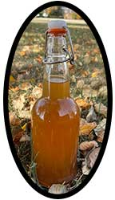

Best Apple Pie Moonshine Recipe
This easy Apple Pie Moonshine recipe is an incredibly delicious
cocktail.
It's always the hit of the party and everyone goes crazy for
this easy moonshine recipe.
Plus, you won't believe how easy it is
to make!
Prep Time: 5 minutes
Cook Time: 1 hour
Total Time: 1 hour 5 minutes
Real
moonshine
will
not be utilized for this recipe just a really high proof alcohol.